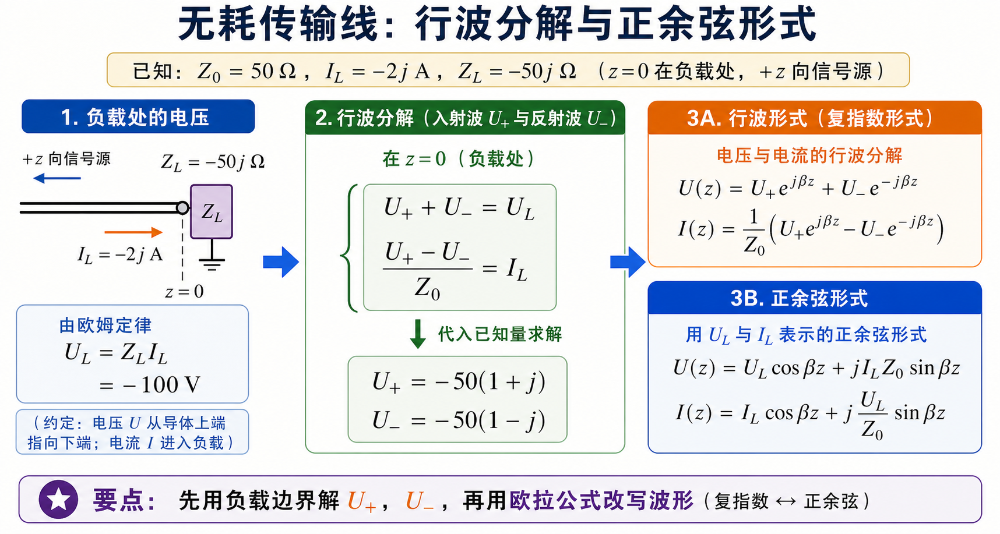
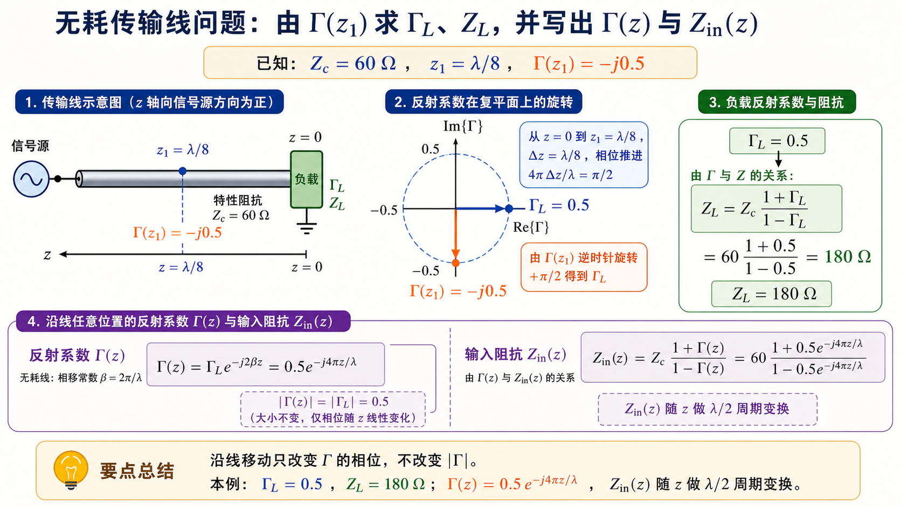
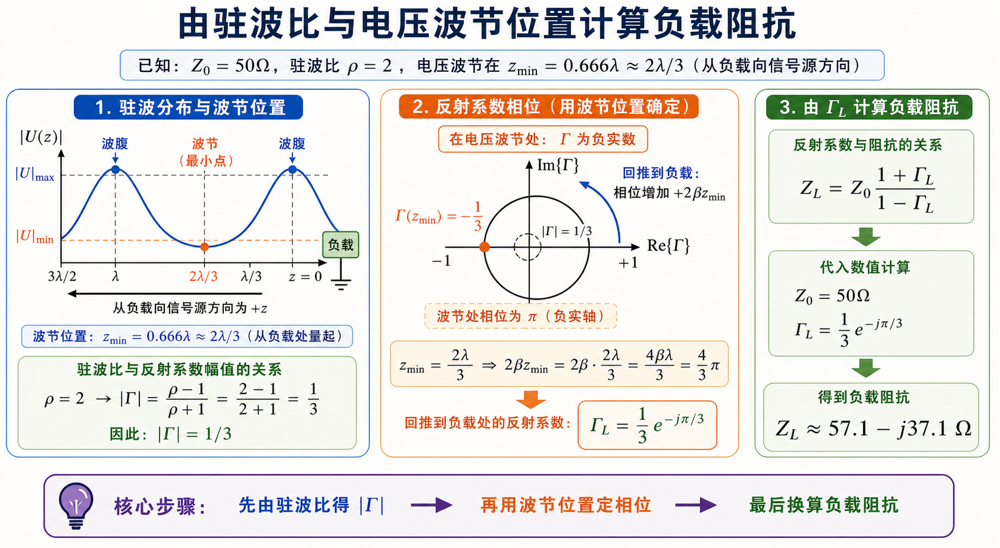

第一次作业 · Lec04§
导航： 总目录 · 符号与导读 · Lec01 · Lec02 · Lec03 · Lec04 · Lec05 · 附录
Lec04 作业§
第 1 题§
（对应大纲 Lec04 作业 第 1 题；教材 §1.3–1.4（北理工）或 §1.4（华科）附近。本题无唯一标准答案，宜作长期复习笔记。）
题目复述§
整理并阐述均匀无耗传输线三种典型工作状态的特点、变化规律及重要结论（含常用公式）。

三种状态最稳的判断入口是 $|\Gamma|$：$|\Gamma|=0$ 时没有反射，是行波；$|\Gamma|=1$ 时全反射，是纯驻波；中间值就是既传能量又有起伏的行驻波。
详细思路§
按 行波、纯驻波（含短路、开路、纯电抗三类终端）、行驻波 分块；每一块建议写清：名称与条件、沿线幅值/相位特征、反射与驻波参量、输入阻抗沿线规律、常用公式 3～5 条、自举小例（数字不必复杂）。
一步步解答§
以下为可直接誊入作业本的结构示范（内容请结合你班教材插图与符号再润色）。
1. 行波状态
- 条件：终端匹配 $Z_L=Z_c$，故 $\Gamma_L=0$，无反射波。
- 沿线：$|U(z)|$、$|I(z)|$ 为常数（不衰变时）；电压电流同相（就传播方向而言为单向行波）。
- 能量：入射功率全部被负载吸收；$\rho=1$，行波系数 $K=1$（若定义 $K=|U|_{\min}/|U|_{\max}$）。
- $Z_{\mathrm{in}}$：沿线 $Z_{\mathrm{in}}(z)=Z_c$（无耗无限长或匹配终端的常用理想化结论）。
- 公式：匹配时 $U^-=0$，电压为单向行波；若采用与本套 Lec03 相同的写法 $U(z)=U^+\mathrm{e}^{\mathrm{j}\beta z}+U^-\mathrm{e}^{-\mathrm{j}\beta z}$（$z$ 自负载向源），则 $U(z)=U^+\mathrm{e}^{\mathrm{j}\beta z}$，$I(z)=U^+\mathrm{e}^{\mathrm{j}\beta z}/Z_c$。亦常见教材用 $\mathrm{e}^{-\mathrm{j}\beta z}$ 表示另一方向的行波，全题与教材统一即可。
2. 纯驻波状态
- 条件：$|\Gamma_L|=1$，如 短路 $Z_L=0$、开路 $Z_L\to\infty$、或 纯电抗 $Z_L=\mathrm{j}X$。
- 沿线：$|U(z)|$、$|I(z)|$ 呈 $\lambda/2$ 周期 起伏；电压波腹处电流为节，电流波腹处电压为节；瞬时场上表现为「空间固定、时间振荡」的驻立图案。
- 能量：线上无净有功向负载输送（纯电抗或短开路时）；能量在电场与磁场间交换。
- $Z_{\mathrm{in}}$：沿线为 纯电抗 $Z_{\mathrm{in}}(z)=\mathrm{j}X_{\mathrm{in}}(z)$，随 $z$ 周期性变化。
- 公式（自负载向源，常用写法）：
- 短路：$Z_{\mathrm{in}}(z)=\mathrm{j}Z_c\tan\beta z$；
- 开路：$Z_{\mathrm{in}}(z)=-\mathrm{j}Z_c\cot\beta z$；
- $\rho\to\infty$，$K=0$（若 $K=|U|_{\min}/|U|_{\max}$）。
3. 行驻波状态
- 条件：$0<|\Gamma_L|<1$，一般为 复阻抗 负载。
- 沿线：$|U|$、$|I|$ 在最大值与最小值之间起伏；波腹—波节相距 $\lambda/4$，腹—腹或节—节相距 $\lambda/2$。
- 反射：$\displaystyle |\Gamma|=\frac{\rho-1}{\rho+1}$，$\displaystyle \rho=\frac{1+|\Gamma|}{1-|\Gamma|}$。
- $Z_{\mathrm{in}}$：$\displaystyle Z_{\mathrm{in}}(z)=Z_c\frac{Z_L+\mathrm{j}Z_c\tan\beta z}{Z_c+\mathrm{j}Z_L\tan\beta z}$；在 电压波腹 处 $Z_{\mathrm{in}}$ 为 最大实部（约 $Z_c\rho$），在 电压波节 处为 最小实部（约 $Z_c/\rho$）（无耗线）。
- 幅值：$|U(z)|\propto |1+\Gamma_L\mathrm{e}^{-\mathrm{j}2\beta z}|$（常数因子吸收到 $|U^+|$）。
标准解答§
- 行波：$\Gamma_L=0$，$|U|$、$|I|$ 沿线不变（理想无耗匹配），$\rho=1$。
- 纯驻波：$|\Gamma_L|=1$，腹节交替、间距 $\lambda/4$；短/开路线 $Z_{\mathrm{in}}$ 为 $\mathrm{j}Z_c\tan\beta z$ 或 $-\mathrm{j}Z_c\cot\beta z$。
- 行驻波：$0<|\Gamma|<1$，$\rho>1$，$Z_{\mathrm{in}}(z)$ 为一般双曲正切型公式；腹/节处阻抗为纯阻且取极值。
常见疑惑点§
- 疑惑： 「行驻波」里还有「行」吗？解答： 有；可看成 行波分量（$U^+$ 与 $U^-$）干涉后，既有能量传输（实功）也有来回交换（取决于负载）。
第 2 题§
（对应大纲 Lec04 作业 第 2 题。）
题目复述§
均匀无耗线特性阻抗 $Z_0=50\,\Omega$，负载电流 $I_L=-2\mathrm{j}\,\mathrm{A}$，负载阻抗 $Z_L=-50\mathrm{j}\,\Omega$。（1）把 $U(z)$、$I(z)$ 写成入射波与反射波之和；（2）用欧拉公式写成正余弦形式。

本题不要一开始就展开指数。先在负载面写出 $U^+$、$U^-$ 的两个边界方程，解出入射波与反射波，再把复指数形式改写成正余弦形式。
详细思路§
- 先由 $U_L=Z_L I_L$ 得负载电压相量。
- 由 $U_L=U^++U^-$、$I_L=(U^+-U^-)/Z_0$ 解 $U^+$、$U^-$（符号与 符号与导读 一致）。
- 写出 $U(z)=U^+\mathrm{e}^{\mathrm{j}\beta z}+U^-\mathrm{e}^{-\mathrm{j}\beta z}$（若 $+z$ 指向源，指数可能互换——全题统一即可）。
- 正余弦形式用题给通解 $U(z)=U_L\cos\beta z+\mathrm{j}I_L Z_0\sin\beta z$ 等直接展开。
一步步解答§
负载电压
$$ U_L=Z_L I_L=(-50\mathrm{j})(-2\mathrm{j})=-100\ \mathrm{V}. $$
入射、反射（取 $U(z)=U^+\mathrm{e}^{\mathrm{j}\beta z}+U^-\mathrm{e}^{-\mathrm{j}\beta z}$，$I(z)=\dfrac{U^+\mathrm{e}^{\mathrm{j}\beta z}-U^-\mathrm{e}^{-\mathrm{j}\beta z}}{Z_0}$）
$$ \begin{cases} U^++U^-=-100,\\[4pt] \dfrac{U^+-U^-}{Z_0}=-2\mathrm{j} \end{cases} \Rightarrow\ \begin{aligned} U^+-U^-&=-100\mathrm{j},\\ 2U^+&=-100-100\mathrm{j}\ \Rightarrow\ U^+=-50(1+\mathrm{j}),\\ 2U^-&=-100+100\mathrm{j}\ \Rightarrow\ U^-=-50(1-\mathrm{j}). \end{aligned} $$
（1）行波分解
$$ \boxed{ \begin{aligned} U(z)&=-50(1+\mathrm{j})\mathrm{e}^{\mathrm{j}\beta z}-50(1-\mathrm{j})\mathrm{e}^{-\mathrm{j}\beta z},\\ I(z)&=\frac{-50(1+\mathrm{j})\mathrm{e}^{\mathrm{j}\beta z}+50(1-\mathrm{j})\mathrm{e}^{-\mathrm{j}\beta z}}{Z_0}. \end{aligned}} $$
可验证 $\Gamma_L=U^-/U^+=-\mathrm{j}$，与 $\dfrac{Z_L-Z_0}{Z_L+Z_0}$ 一致。
（2）正余弦形式
$$ \begin{aligned} U(z)&=U_L\cos\beta z+\mathrm{j}I_L Z_0\sin\beta z =-100\cos\beta z+100\sin\beta z,\\ I(z)&=I_L\cos\beta z+\mathrm{j}\frac{U_L}{Z_0}\sin\beta z =-2\mathrm{j}\cos\beta z-2\mathrm{j}\sin\beta z =-2\mathrm{j}(\cos\beta z+\sin\beta z). \end{aligned} $$
利用 $\cos\beta z+\sin\beta z=\sqrt2\cos(\beta z-\pi/4)$ 等可再化为单一余弦。
标准解答§
- $U_L=-100\,\mathrm{V}$；$U^+=-50(1+\mathrm{j})\,\mathrm{V}$，$U^-=-50(1-\mathrm{j})\,\mathrm{V}$；$U(z)$、$I(z)$ 如上两形式任选其一作答即可。
- 余弦式：$U(z)=-100\cos\beta z+100\sin\beta z$，$I(z)=-2\mathrm{j}(\cos\beta z+\sin\beta z)$。
常见疑惑点§
- 疑惑： $I_L=-2\mathrm{j}\,\mathrm{A}$ 是有效值相量还是峰值相量？解答： 作业未特别声明时，全题同一约定即可；写瞬时值 $i(z,t)=\mathrm{Re}\{I(z)\mathrm{e}^{\mathrm{j}\omega t}\}$ 时要与相量约定一致。
第 3 题§
（对应大纲 Lec04 作业 第 3 题。）
题目复述§
无耗线特性阻抗 $Z_c=60\,\Omega$。在距负载 $z_1=\lambda/8$ 处，反射系数 $\Gamma(z_1)=-\mathrm{j}0.5$。（1）求 $\Gamma_L$、$Z_L$；（2）若导波波长 $\lambda_p=10\,\mathrm{cm}$，写出任意 $z$ 处的 $\Gamma(z)$、$Z_{\mathrm{in}}(z)$，并说明 $Z_{\mathrm{in}}(z)$ 与 $Z_L$ 的关系。

沿无耗线移动时，$\Gamma$ 的模不变，只是在复平面上转角。已知 $z_1=\lambda/8$ 处的 $\Gamma$，先把相位回推到负载面，再用 $\Gamma_L$ 换算 $Z_L$。
详细思路§
- $\Gamma(z)=\Gamma_L\mathrm{e}^{-\mathrm{j}2\beta z}$（与教材约定一致），故 $\Gamma_L=\Gamma(z_1)\mathrm{e}^{\mathrm{j}2\beta z_1}$。
- $z_1=\lambda/8\Rightarrow 2\beta z_1=\pi/2$。
- $Z_L=Z_c\dfrac{1+\Gamma_L}{1-\Gamma_L}$；$Z_{\mathrm{in}}(z)=Z_c\dfrac{Z_L+\mathrm{j}Z_c\tan\beta z}{Z_c+\mathrm{j}Z_L\tan\beta z}$。
- 关系：双线性变换 + $\lambda/2$ 周期；沿线等 $|\Gamma|$ 圆上旋转。
一步步解答§
（1）
$$ \Gamma_L=\Gamma(z_1)\mathrm{e}^{\mathrm{j}2\beta z_1}=(-\mathrm{j}0.5)\cdot\mathrm{e}^{\mathrm{j}\pi/2}=(-\mathrm{j}0.5)\cdot\mathrm{j}=0.5. $$
$$ Z_L=Z_c\frac{1+\Gamma_L}{1-\Gamma_L}=60\cdot\frac{1.5}{0.5}=180\ \Omega\quad(\text{纯阻}). $$
（2） $\beta=2\pi/\lambda_p$，故
$$ \Gamma(z)=0.5\,\mathrm{e}^{-\mathrm{j}4\pi z/\lambda_p}. $$
$$ Z_{\mathrm{in}}(z)=60\cdot\frac{180+\mathrm{j}60\tan\beta z}{60+\mathrm{j}180\tan\beta z} =60\cdot\frac{3+\mathrm{j}\tan\beta z}{1+3\mathrm{j}\tan\beta z}. $$
与 $Z_L$ 的关系（文字）：$Z_{\mathrm{in}}(z)$ 由 $Z_L$ 经无耗线 变换 得到；$z$ 增加 $\lambda/2$ 时 $Z_{\mathrm{in}}$ 重复；$z=0$ 时 $Z_{\mathrm{in}}(0)=Z_L$；$|\Gamma(z)|=|\Gamma_L|$ 沿线不变。
标准解答§
- $\Gamma_L=0.5$，$Z_L=180\,\Omega$。
- $\Gamma(z)=0.5\mathrm{e}^{-\mathrm{j}4\pi z/\lambda_p}$；$Z_{\mathrm{in}}(z)=60\dfrac{3+\mathrm{j}\tan\beta z}{1+3\mathrm{j}\tan\beta z}$（$\beta=2\pi/\lambda_p$）。
- 关系：同一点反射系数的模不变；阻抗沿线按 $\tan\beta z$ 规律变化且具有 $\lambda/2$ 周期。
常见疑惑点§
- 疑惑： 为什么 $\Gamma(z_1)=-\mathrm{j}0.5$ 却得到 实数 $Z_L$？解答： 只说明在该几何距离上反射波相对入射波有 $\pm90^\circ$ 附加相移；负载本身仍可纯阻，很常见。
第 4 题§
（对应大纲 Lec04 作业 第 4 题。）
题目复述§
同轴线 $Z_0=50\,\Omega$，测得驻波比 $\rho=2$，一个电压波节距终端负载为 $0.666\lambda$（按大纲为相波长 $\lambda$）。求终端负载 $Z_L$。

这类题分三步：由驻波比求 $|\Gamma|$，由波节位置确定 $\Gamma_L$ 的相位，最后用 $Z_L=Z_0(1+\Gamma_L)/(1-\Gamma_L)$ 换算成负载阻抗。
详细思路§
- $|\Gamma|=(\rho-1)/(\rho+1)$。
- 在电压波节处，无耗线上 $\Gamma(z)$ 为负实数：$\Gamma(z_{\mathrm{节}})=-|\Gamma|$（与教材相位零点一致时）。
- 由 $\Gamma(z)=\Gamma_L\mathrm{e}^{-\mathrm{j}2\beta z}$ 反解 $\Gamma_L=\Gamma(z_{\mathrm{节}})\exp\bigl(\mathrm{j}2\beta z_{\mathrm{节}}\bigr)$。
- 题中 $0.666\lambda$ 在作业与工程上常按 $2\lambda/3$ 理解（$0.666\ldots=2/3$），则 $2\beta z=8\pi/3\equiv 2\pi/3\pmod{2\pi}$，计算简洁；若老师给定其它小数，按同一公式代入即可。
一步步解答§
$$ |\Gamma|=\frac{\rho-1}{\rho+1}=\frac{1}{3}. $$
取 波节 在 $z=z_{\mathrm{节}}=\dfrac{2}{3}\lambda$（即题给 $0.666\lambda$ 的常用解读），则
$$ \Gamma(z_{\mathrm{节}})=-\frac{1}{3}\quad(\text{实数、负}). $$
$$ \begin{aligned} \Gamma_L&=\Gamma(z_{\mathrm{节}})\,\exp\bigl(\mathrm{j}2\beta z_{\mathrm{节}}\bigr)\\ &=-\frac{1}{3}\,\exp\Bigl(\mathrm{j}\,\frac{4\pi}{\lambda}\cdot\frac{2\lambda}{3}\Bigr) =-\frac{1}{3}\,\exp\Bigl(\mathrm{j}\frac{8\pi}{3}\Bigr) =-\frac{1}{3}\,\exp\Bigl(\mathrm{j}\frac{2\pi}{3}\Bigr). \end{aligned} $$
而 $\mathrm{e}^{\mathrm{j}2\pi/3}=-\dfrac{1}{2}+\mathrm{j}\dfrac{\sqrt3}{2}$，故
$$ \Gamma_L=-\frac{1}{3}\Bigl(-\frac{1}{2}+\mathrm{j}\frac{\sqrt3}{2}\Bigr)=\frac{1}{6}-\mathrm{j}\frac{\sqrt3}{6}=\frac{1}{3}\mathrm{e}^{-\mathrm{j}\pi/3}. $$
$$ \frac{Z_L}{Z_0}=\frac{1+\Gamma_L}{1-\Gamma_L} =\frac{1+\dfrac{1}{6}-\mathrm{j}\dfrac{\sqrt3}{6}}{1-\dfrac{1}{6}+\mathrm{j}\dfrac{\sqrt3}{6}} =\frac{7-\mathrm{j}\sqrt3}{5+\mathrm{j}\sqrt3}. $$
分子分母同乘 $5-\mathrm{j}\sqrt3$：
$$ \frac{Z_L}{Z_0}=\frac{(7-\mathrm{j}\sqrt3)(5-\mathrm{j}\sqrt3)}{25+3} =\frac{32-12\mathrm{j}\sqrt3}{28} =\frac{8-3\mathrm{j}\sqrt3}{7}. $$
$$ \boxed{Z_L=Z_0\cdot\frac{8-3\mathrm{j}\sqrt3}{7}\approx(57.1-\mathrm{j}37.1)\ \Omega.} $$
标准解答§
- $|\Gamma|=\dfrac{1}{3}$；在 $z=\dfrac{2}{3}\lambda$ 为电压波节时，$\Gamma_L=\dfrac{1}{3}\mathrm{e}^{-\mathrm{j}\pi/3}$。
- $\displaystyle Z_L=50\cdot\frac{8-3\mathrm{j}\sqrt3}{7}\,\Omega$（数值约 $57.1-\mathrm{j}37.1\,\Omega$）。
常见疑惑点§
- 疑惑： 若 $0.666$ 不取 $2/3$，答案变吗？解答： 会变；只要把 $2\beta z_{\mathrm{节}}=4\pi\times0.666\ldots$ 用题目给定小数算准，再重复上述 $\Gamma_L$ 与 $Z_L$ 步骤即可。
- 疑惑： 波节位置会不会对应 $\Gamma=+|\Gamma|$？解答： 取决于教材对 $\Gamma(z)$ 相位零点（在负载还是在某参考面）的定义；本解答采用与课堂常用写法一致的「波节处 $\Gamma(z)$ 取负实」约定，若与你书相反，整体加 $\pi$ 相移即可自洽。